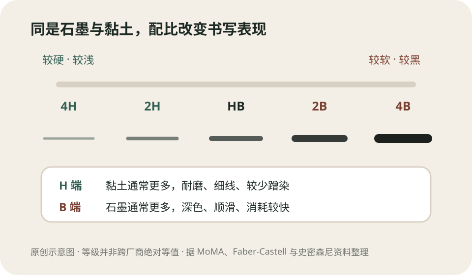
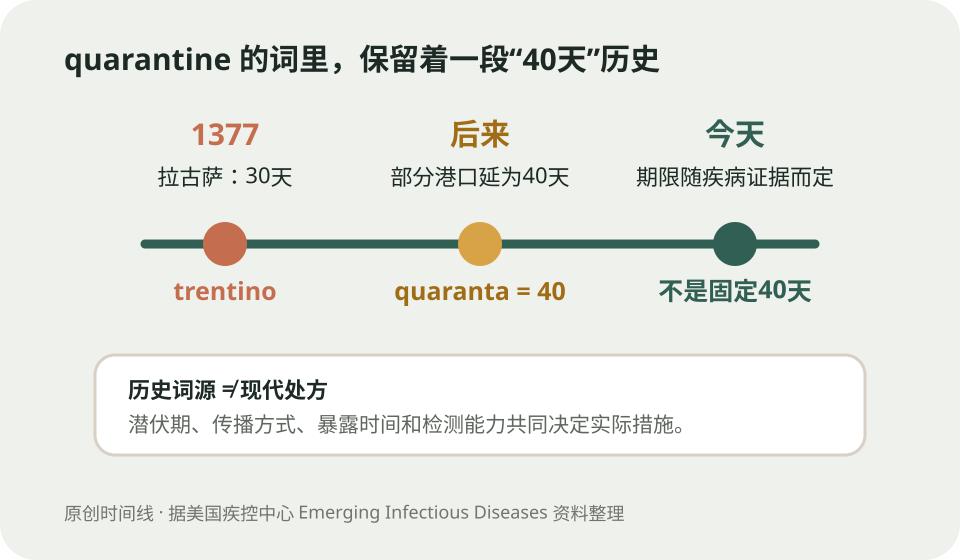
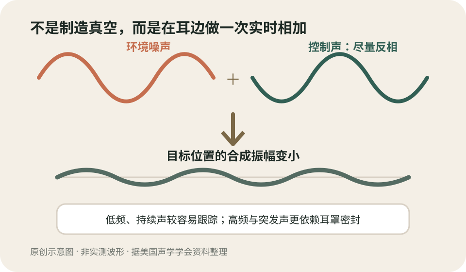

今日热点 01 · 北京 / 暴雨出行
北京暴雨应急：今明两天社会车辆可全天使用公交车道
北京市政府8月12日发布提示：为应对暴雨，8月12日、13日两天，社会车辆全天可以使用公交专用车道；全市77条地势较高道路可供车辆应急停放。这是防汛期间的临时措施，不是公交车道规则永久改变。
发生了什么
开放的是两天的通行时段，另有77条道路承担避险停车
北京市政府通报称，本轮防汛二级应急响应从8月11日9时启动，交通防汛专项分指挥部同步进入二级响应。8月12日和13日，社会车辆可全天使用公交专用车道；交管部门还公布77条地势较高道路，供有需要的车辆应急停放。
应急停车从8月11日18时开始，结束时间跟随相关预警解除。通报同时提醒，不要占用消防通道、应急车道、公交站台和路口等位置。名单解决的是临时避险，不等于这些道路日后都成为常设停车场。
不要误读
临时开放不代表所有车道、所有规则都暂停
北京日常的公交专用车道有各自适用时间和路段，部分车道已在非专用时段允许社会车辆通行。本次措施把8月12日、13日的可通行范围临时扩展到全天，核心条件是防汛应急，而不是取消公交优先政策。
道路现场仍可能因积水、抢险或交通组织采取封闭、绕行和限速。能驶入公交车道，不等于可以越过警戒线，也不等于公交站、快速公交专用道的现场标志失效；临时指挥和实时标志优先。
这与你有什么关系
先看实时路况，再决定是否把车开去“高处”
如果车辆所在位置有进水风险，应先核对官方公布的77条道路和现场引导，不要仅凭地名里的“山”“岗”判断地势。到达后按顺行方向靠边停放、留下联系方式，并给抢险车辆和居民出入口留足空间。
暴雨中最危险的选择之一，是驶入看不清深度和边界的积水。遇到封路或水位上涨，应服从交管安排，不在桥下、地下通道、河道旁和低洼停车场停留；是否挪车要以人身安全为先。
聊天时可以补一句
应急交通不是简单“放开”，而是把有限道路重新分配
暴雨会同时降低道路容量、增加绕行需求，还需要给排水、消防和救援车辆留出通道。临时开放公交车道，是把平时为公共交通保留的一部分空间短时纳入整体疏散，不代表这部分空间突然没有了公共用途。
同理，把较高道路列为应急停车点，是为了降低地下和低洼区域的车辆风险，但会占用路侧容量。措施是否有效，取决于信息是否及时、停车是否守序，以及抢险通道能否始终保持畅通。
暴雨期间能走公交车道、能在高处道路停车，都是有时限和现场条件的应急安排。
查看事实与延伸来源
北京市政府8月12日：公交车道临时开放与77条应急停车道路
北京市政府8月11日：防汛二级响应与交通保障安排
北京市交通委员会：公交专用车道现行优化调整规则
今日热点 02 · 野生动物 / 网络直播
大熊湖白头海雕Jackie去世，陪伴直播镜头十年的生命结束了
美联社8月10日报道，加州大熊湖白头海雕Jackie在接受约三周治疗后去世。她曾与伴侣Shadow通过巢穴直播被全球观众认识。兽医已确认贫血等病情，但死亡的根本原因仍要等待检查，不能从直播片段倒推。
已确认的时间线
从野外救助到输血治疗，团队仍未给病因下结论
Jackie被发现状况不佳后送往奥海猛禽中心，接受补液、供氧、抗菌治疗和输血。美联社称，她一度有所改善，但随后情况恶化，于8月10日去世。遗体已交给加州鱼类与野生动物部门作进一步检查。
目前可以确认的是治疗经过和贫血表现，不能确认的是最初病因与最终死亡机制。感染、毒物、创伤或其他因素都需要样本和尸检证据；把某段直播里的动作解释成诊断，超出了画面能提供的信息。
为什么这么多人认识她
一台2015年装上的镜头，把野生动物观察变成长期共同记忆
非营利组织Friends of Big Bear Valley自2015年起运营巢穴摄像头。观众看见Jackie和Shadow筑巢、孵卵，也看见暴雪、失败的繁殖季和雏鸟成长。直播没有旁白替动物编故事，却让分散在各地的人共享同一段自然时间。
这种熟悉感容易让人把野生动物当成可随时介入的网络角色。实际上，直播组织长期强调不干扰巢区；救助也要由持证人员依据动物状态和法律要求判断。关心并不自动带来接触、投喂或靠近巢穴的许可。
把视野推远
一只明星海雕的故事，背后是一个物种漫长的恢复
美国白头海雕曾因栖息地损失、猎杀和DDT导致的繁殖失败大幅减少。禁用DDT、法律保护和栖息地治理后，种群恢复，并在2007年移出美国《濒危物种法》名录；这不等于每个地方种群从此没有威胁。
Jackie的知名度能把注意力带到野生动物保护，但单个个体的遭遇不能代替种群数据。判断保护是否有效，还要看繁殖成功率、栖息地、污染物、疾病和人为干扰等长期指标。
如何面对直播中的死亡
可以哀悼，也要保留野生动物不是剧情角色的边界
长期观看会形成真实的情感联系，死亡带来的失落不必被嘲笑。但直播不是一部由观众投票改写的连续剧：繁殖失败、受伤和死亡本来就是野外生命的一部分，组织也不能为了满足观众而随意干预。
更有用的纪念，是支持可信的栖息地保护和救助机构，遵守巢区距离与观鸟规范，并等待专业检查结果。若最终病因公布，也应区分个体诊断与对整个物种的推论。
直播能让人看见一只野生动物的生活，却不能把观看者变成诊断者或剧情导演。
查看事实与延伸来源
美联社8月10日：Jackie去世、治疗经过与检查待定
Friends of Big Bear Valley：巢穴直播与组织说明
Friends of Big Bear Valley：Jackie与Shadow观察日志
美国鱼类及野生动物管理局：白头海雕恢复与现行保护
今日热点 03 · 天文 / 观测安全
2026年日全食今晚发生：中国看不到本地食象，可以看官方直播
8月12日的日全食将掠过格陵兰、冰岛、西班牙和葡萄牙东北一小角，欧洲、加拿大等更大范围可见日偏食。NASA直播于北京时间8月13日1时15分开始；中国大陆不在本次可见区域内。
哪里能看见
全食带很窄，偏食区很大，中国不在两者之内
NASA给出的全食路径经过格陵兰、冰岛、北大西洋、西班牙和葡萄牙东北一小片地区；路径上的多数地点，全食持续不到两分钟，中心线附近最长也不到两分半。欧洲大部、加拿大和北美北部等地只能见到不同程度的偏食。
依据NASA公布的可见范围，中国大陆不在本次全食或偏食区域，因此抬头不会看到太阳被月球遮住。想同步观看，可以通过NASA或欧洲航天局直播；NASA节目从北京时间8月13日1时15分开始。
为什么只有一条窄带
月球本影扫过地球，站位相差几百公里就会看到不同的太阳
日全食发生时，月球从地球与太阳之间经过，月球本影落到地面形成一条移动的窄带。只有处在本影中的观察者，才会在短时间内看到太阳光球被完全遮住；本影之外更宽的半影区只能看到偏食。
这也解释了为什么同一国家内可能有人看到全食、有人只看到偏食。天气则是另一层条件：路径算得再准，云层仍可能遮住太阳，所以观测地通常既看几何位置，也看当地气候和当天预报。
安全边界
只要还有太阳光球露出，就必须使用合格太阳观测防护
NASA提醒，普通墨镜不适合直接看太阳。偏食阶段和全食前后，应使用符合ISO 12312-2要求、没有破损的日食眼镜，或采用针孔投影等间接方法；相机、双筒镜和望远镜还要在物镜前安装合适的太阳滤镜。
只有位于全食带、太阳光球被完全遮住的短暂全食阶段，才可按现场指引移开眼部防护。一旦亮光重新出现就要立即戴回。中国观众通过屏幕看直播，不需要佩戴日食眼镜。
聊天时可以补一句
全食不是“更黑的偏食”，而是会露出平时看不见的日冕
偏食时即使只剩很窄的太阳光球，天空也未必像夜晚；那一点直射光仍足以伤眼。进入全食后，光球被遮住，太阳外层稀薄的日冕显现，环境亮度、温度和动物行为都可能在几分钟内出现变化。
欧洲航天局将在西班牙哈瓦兰布雷天文台直播，并利用全食检验太阳观测设备。对不在路径上的人，直播的价值不只是看画面，也能同时比较不同地点的天气、食分和全食持续时间。
日全食能不能看到，先由你是否站在月球本影里决定；怎样看，则始终由眼睛安全决定。
查看事实与延伸来源
NASA：2026年8月12日日全食路径、时间与直播
欧洲航天局：全食路径、西班牙观测与直播安排
美联社8月11日：观测地区、持续时间与安全提醒
涉猎 01 · 材料 / 书写工具
铅笔上的H和B不是颜色名，而是石墨与黏土配方留下的尺度
现代铅笔芯主要由石墨和黏土制成，并不含金属铅。H表示较硬、较浅，B表示较软、较黑，HB居中；数字表示沿各自方向增加的等级，但这套等级没有统一到所有厂商写出完全相同的深浅。

H端通常黏土比例更高、笔迹更硬更浅；B端通常石墨比例更高、笔迹更软更黑。原创示意图；实际深浅会随厂商、纸张和用力变化。
字母怎么读
H看硬度，B看黑度，数字越大就越往那一端走
Faber-Castell的说明把H解释为Hard、B解释为Black，HB是中间常用等级。4H比2H更硬、更容易留下浅而细的线；4B比2B更软，单位面积沉积的石墨更多，线条通常更黑，也更容易蹭花。
这不是一把跨品牌完全等值的尺。厂商会调整石墨、黏土、蜡和工艺，纸张纹理与落笔压力也会改变结果。买同样标注的HB，手感和深浅可能不同；需要精确配套时，最好在目标纸张上试画。
为什么配方能改手感
黏土提供骨架，石墨层片在纸面留下可见痕迹
现代铅笔芯把细石墨与黏土混合、挤压成条并烧结。增加黏土通常让笔芯更硬、耐磨，落在纸上的石墨更少；提高石墨比例通常让笔迹更深、更顺滑，但笔尖消耗和蹭染也更明显。
MoMA指出，这种人工配方在18世纪末发展起来，使制造者不必只依赖天然整块石墨，也能稳定制作不同硬度。所谓“铅笔芯”沿用了旧称，材料本身不是铅，正常书写不会靠金属铅留下痕迹。
H、B标的是一组配方与书写表现，不是所有品牌共用的绝对硬度值。
查看事实与延伸来源
Faber-Castell：石墨与黏土比例、H/B/F标记及非统一尺度
纽约现代艺术博物馆：铅笔芯制造与黏土比例
史密森尼美国历史博物馆：带H至8H硬度表的历史铅笔实物
涉猎 02 · 公共卫生史 / 词源
“检疫”为什么常和四十天连在一起：quarantine的词里就藏着40
quarantine来自意大利语quaranta，意为四十。14世纪的拉古萨先实行30天隔离，后来欧洲港口逐渐采用40天；它是历史制度形成的时长，不是所有传染病都天然需要隔离40天。

1377年拉古萨先规定30天，随后一些港口延长为40天，quarantine由此得名。原创时间线；不同年代和疾病的实际措施并不相同。
词是怎么来的
先有30天的trentino，后来才有40天的quarantino
美国疾控中心的词源资料记载，1377年，亚得里亚海港口拉古萨要求来自疫区的船员和货物先在附近地点停留30天，这套安排被称为trentino。后来一些城市把期限延长到40天，名称也转向与quaranta相连。
为什么是40天，并没有一个被史料唯一确认的答案。CDC列举过宗教中的40天、古典医学关于疾病发展期的观念，以及行政经验等解释。可靠的说法是：40天成为制度惯例并进入词源，而不是某次实验算出了万能数字。
今天该怎样理解
检疫时长应跟着疾病证据走，不跟着词源走
现代公共卫生会根据潜伏期、传播方式、暴露时间和检测能力制定观察或限制期限。不同疾病、不同接触情形可以完全不同；词里有“40”，不意味着今天面对任何传染病都要把人关满40天。
检疫通常针对可能暴露但尚未出现症状的人，隔离则把已经患病或确认感染者与他人分开。日常语言常把两者混用，但在公共卫生决策中，适用对象、法律依据和支持措施都可能不同。
quarantine记住了四十天的历史，现代检疫期限却要由具体疾病和暴露证据决定。
查看事实与延伸来源
美国疾控中心Etymologia：quarantine词源、30天与40天
美国疾控中心：检疫制度从拉古萨到威尼斯的历史
世界卫生组织《2007年世界卫生报告》：港口检疫与40天制度
美国疾控中心：公共卫生隔离与检疫的基本区别
涉猎 03 · 声学 / 消费电子
降噪耳机不是制造真空：它在耳边生成一股算准时机的“反声音”
主动降噪系统用麦克风采集环境声，处理器估算相反相位的控制声，再由扬声器在耳边叠加。它对持续、低频的发动机和空调声通常更有效；突发人声和高频细节仍要依靠耳罩密封等被动隔音。

控制声在目标位置与噪声尽量反相叠加，使合成振幅减小。原创示意图；现实系统会受延迟、位置、频率和密封影响。
基本原理
麦克风听、芯片算、扬声器发，目标只在耳边形成较安静区域
美国声学学会把主动噪声控制概括为破坏性干涉：系统测量噪声，生成经过幅度和相位调整的控制声，让两者在目标位置叠加时彼此削弱。耳机里的前馈和反馈麦克风，会分别帮助估计外界声与耳内残余声。
它并没有消灭房间里的声波，也不是简单播放一段固定的“反向录音”。头部移动、耳罩漏气和噪声变化都会改变声场，算法必须不断更新；最安静的位置通常就是传感器和耳道附近的一小片区域。
为什么低频更好降
波长较长、变化较慢，给测量与修正留下更多时间
发动机、车轮和空调常产生相对稳定的低频声。较长波长让耳边小范围内的相位关系更容易保持，处理器也更有机会在下一个波形到来前作出修正，因此主动降噪在飞机舱和通勤环境里格外明显。
高频声波长短，头部或耳罩的微小变化就会改变相位；突发声又难以提前预测。耳垫密封、材料和结构对这些声音更重要。主动降噪与被动隔音不是二选一，好的耳机通常把两者叠加。
主动降噪是在耳边控制声波叠加，不是把外界声音从空间里删除。
查看事实与延伸来源
美国声学学会：主动噪声控制的麦克风、扬声器与历史
美国声学学会：反相控制声与破坏性干涉
美国声学学会：主动控制偏低频、被动结构偏高频的工程实例
南加州大学工程学院：耳机主动降噪的反馈、延迟与高频限制
“知屋漏者在宇下，知政失者在草野。”
王充《论衡·书解》（约1世纪）
王充把判断的位置说得很具体：屋子漏不漏，住在檐下的人最先知道；治理哪里失灵，承受后果的人感受最深。这并不等于经验可以替代全部证据，而是提醒决策者，统计表和制度文本之外，还有一类从使用现场生长出来的知识。听见草野之言只是起点，还要让它进入核查与修正。
核对原文与语境
“小说像一张蜘蛛网，或许牵得极轻，却仍在四个角上连着生活。”
弗吉尼亚·伍尔夫《一间自己的房间》（1929） · 本刊译
伍尔夫接着指出，网与生活的连接有时几乎看不见；可一旦作品被扯歪、边缘被挂住，人们就会想起创作需要金钱、空间与社会条件。她不是要求小说照抄现实，而是在反驳天才凭空降临的神话。形式可以轻盈，生产它的人却始终活在具体的房间、制度、日常劳动和关系里。
核对原文与语境
“温柔是爱最谦逊的一种形式。”
奥尔加·托卡尔丘克《温柔的讲述者》（2019） · 本刊译
托卡尔丘克所说的温柔，不是柔软语气或一时同情。她把它解释为认真看向另一个存在，承认它的脆弱、独特和会受时间伤害，并由此发现彼此的联系。句子很短，要求却不轻：温柔必须落实为注意力，让被忽略的人、动物和物件获得叙述的空间，而不是把关怀只留在自我感动里。
核对原文与语境
“良好的生活由爱推动，并由知识引导。”
伯特兰·罗素《我的信仰》（1925） · 本刊译
罗素没有把这句话写成德目清单。他随后解释，只有爱而没有知识，善意可能走错方向；只有知识而没有爱，行动又失去值得追求的目的。两者不是装饰性的平衡，而是彼此校正：先问我们真正希望谁过得更好，再检验所选手段是否有效、代价落在谁身上。好生活因此是一项持续修订的实践。
核对原文与语境
“不登高山，不知天之高也；不临深谿，不知地之厚也。”
荀子《劝学》（战国末期）
《劝学》用登高与临渊说明，认识会被所处的位置限制。它并非鼓励用一次冒险替代学习；同篇紧接着谈借助高处、车马与舟楫，强调善于利用已有工具和积累。亲历的价值在于暴露原先看不到的尺度，工具的价值则在于把个人能力延伸出去。两者结合，才不会把眼前边界误当成世界边界。
核对原文与语境